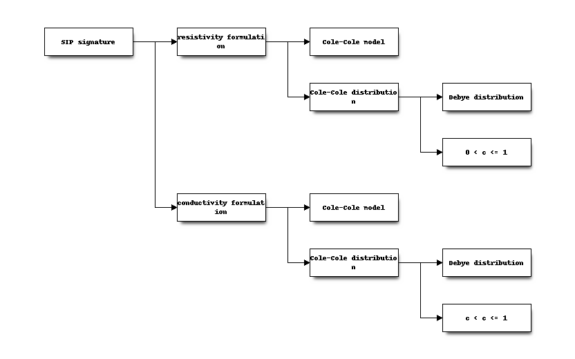
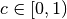

Overview¶

Within the scope of this project, the models used to described (i.e. fit) SIP signatures are divided in formulations using the resistivity and the conductivity. Within these categories, signatures can either be described by one term following the Cole-Cole model, or by a superposition of Cole-Cole terms (i.e. a distribution of Cole-Cole models over the frequency/relaxation time range). The process of determining the various parameters (weights) for such a distribution is called a decomposition. The decomposition is then further subdivided in the Debye decomposition with a fixed c value of 1.0, and the general case for a values of . This structure is mirrored for the conductivity case.